买卖点：一二三类的判定¶
适用范围：本文是 fqcopilot 形态模型的理论基础，判定条件落地为 CLXS 系列模型——模型清单与信号编码见缠论形态模型。结构划分（笔/中枢/走势）的算法在 fqchan04 文档中。
分型、笔、线段解决了「结构怎么划」（第 1～3 章），中枢解决了「重叠区在哪」（fqchan04《中枢》），走势类型解决了「当下处于什么行情」（fqchan04《走势类型》）。本章回答最终的问题：在哪买、在哪卖。
缠论把买卖点分成三类，落到番茄体系一句话概括：一买靠背驰（CLXS0008），二买靠低点抬高（CLXS0005 / CLXS0013），三买靠中枢突破（CLXS0003 / CLXS0004 / CLXS0014）。买点各有镜像卖点。所有判定都建立在中枢的 ZG/ZD 与完备性、走势的方向与终点这些前两章的结论之上。
三类买卖点的缠论定义¶
第一类买点（一买）：下跌趋势中，走势动能衰竭（背驰）产生的转折买点。发生在趋势末端，需要判断转折，风险最高，但买在趋势的起点。工程口径的要求是「背驰 + 新低」——价格创新低，而动能不再新低。
第二类买点（二买）：一买上涨后的第一次回调，回调不创新低，再次转折形成的买点。一买已经确认了反转，二买提供更安全的入场价格，止损位置也明确（回调低点 / 一买低点下方）。
第三类买点（三买）：价格向上突破中枢后，回抽不回到中枢内（不回拉）确认的买点。趋势已经确立，风险来自假突破，空间来自趋势延伸。
卖点完全镜像：一卖是上涨背驰的转折点，二卖是反弹不创新高，三卖是跌破中枢下沿 ZD 后回抽不回中枢。
| 买点 | 结构前提 | 风险 | 止损参照 | 番茄实现 |
|---|---|---|---|---|
| 一买 | 下跌趋势 + 背驰 + 新低 | 高 | 背驰段低点 | CLXS0008 |
| 二买 | 一买后回调不创新低 | 中低 | 回调低点 | CLXS0005 / CLXS0013 |
| 三买 | 突破中枢不回拉 | 中 | 中枢上沿 ZG | CLXS0004 / CLXS0014 |
工程视角下还有一个统一理解：所有的买点本质上都是某级别的一买。二买是「次级别回调中的一买」，三买是「离开中枢一段中的一买」。这不是玄谈——它直接给出了组合公式法：用同一个背驰模型，叠加不同的位置条件，就能组装出二买、三买（见「用法」一节）。
一买与背驰¶
背驰判定算法¶
背驰的锚是中枢（fqchan04《中枢》）：对比进入中枢的一笔与离开中枢的一笔。CLXS0008 把它落成四条可执行规则：
- 对比对象：进入某个笔中枢的一笔 vs 离开该中枢的一笔；
- 对比指标：DIFF 值，或 MACD 柱累积值；
- 判定时机：只在 MACD 发生金叉或死叉的时刻做判断，不是每根 K 线都判；
- 方向规则（满足其一即成立）：
| 方向 | 判定条件 |
|---|---|
| 买点背驰 | 离开笔的 DIFF 值 大于 进入笔的 DIFF 值；或离开笔的绿色 MACD 累积值 大于 进入笔的绿色累积值 |
| 卖点背驰 | 离开笔的 DIFF 值 小于 进入笔的 DIFF 值；或离开笔的红色 MACD 累积值 小于 进入笔的红色累积值 |
注意比较方向：下跌笔对应零轴下方的绿柱，绿柱累积值按带符号数值直接比较——「更大」意味着绿柱面积更小、下跌动能更弱。价格新低而动能不新低，即为背驰。
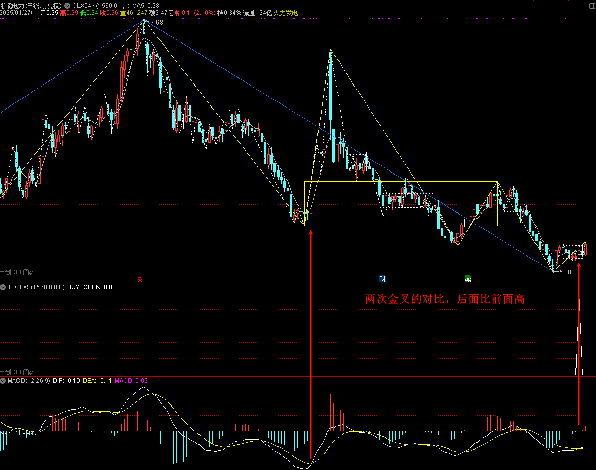
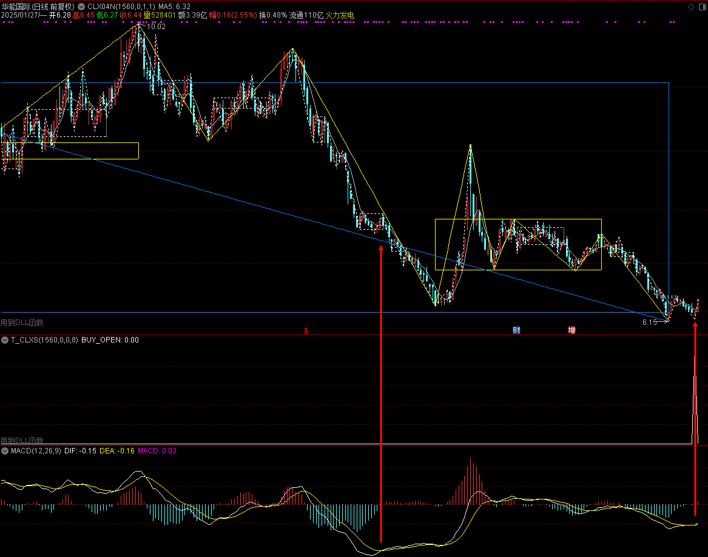
信号编码：买点输出 101 / 201 / 301，分别代表 1 个、2 个、3 个中枢的背驰；卖点为 -101 / -201 / -301。中枢个数越多，结构越稳固，信号越强。这组编码同时区分了两种背驰：1 个中枢的背驰是盘整背驰，2 个及以上中枢同向排列的背驰是趋势背驰。模型初版只在金叉时比较 DIFF 值，后续迭代才扩展为「DIFF 或 MACD 累积值」双口径，并把中枢个数编进信号值。
完备性口径沿用fqchan04《中枢》：单中枢背驰要求该中枢完备；两个及以上中枢的背驰不要求每个都完备——「完备中枢 + 非完备中枢」即可组成两中枢背驰。放宽是有意的：等两个完备中枢都走完，转折点早已过去。
涨停失真的修正¶
背驰完全依赖 MACD，而 MACD 依赖价格波动。股票处于涨停（尤其连续涨停）状态时失去波动性，MACD 随之失真，此时输出的背驰信号不可信。这个缺陷的代价曾经非常具体：系统依据失真信号「直接把龙头给卖了」。
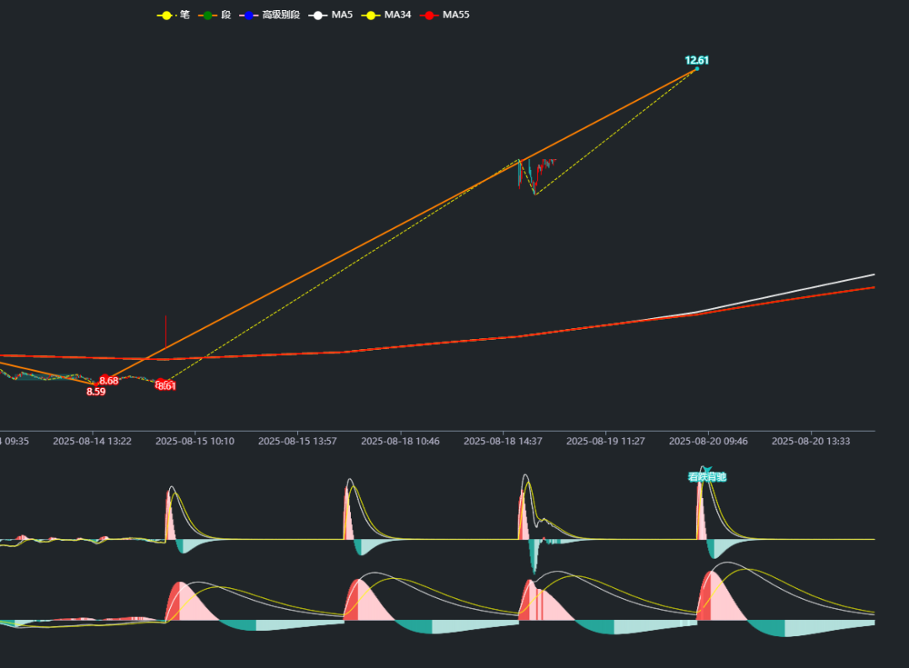
修正规则：检测到进入笔 / 离开笔处于涨停主导状态时，抑制背驰信号输出，不将其计为有效背驰。同一模型后来还修过一类漏报——第一次背驰信号失败后，同一结构后续可能再次产生有效信号（第一次失败、第二次成立），修正后两次都会提示。背驰也是迭代轮次最多的模型：发布（2025-01）→ 信号编码细分（2025-07）→ 作为交易信号集成（2025-07）→ 涨停失真修正（2025-08）→ 二次信号漏报修正（2025-09）→ 除虫（2025-11），每一轮都来自实盘核对。
左侧信号的交易定位¶
背驰是一买，本质是左侧信号。实战中最常见的问题是「背了又背」：把单完备中枢的盘整背驰直接当交易信号，经常背驰之后还有背驰。作者自己的处理边界值得参考：
- 至少等「完备中枢 + 非完备中枢」完成，再接受背驰信号；
- 不追求买在最低点——「总是想买在最低点，也许就只能在梦里」；
- 大部分交易信号放在右侧，背驰作为左侧的尝试性补充。
二买与类二买¶
低点抬高判定¶
二买判定的全部要点是一句话：回调低点高于一买低点。CLXS0013 的信号识别条件：
- 下跌趋势已反转（一买已确认）；
- 一买之后上涨，然后出现回调（下跌笔）；
- 回调低点 > 一买低点——低点抬高，回调企稳；
- MACD 金叉（DIF 上穿 DEA，动量转强）；
- 确认再次上涨，输出二买信号
101。
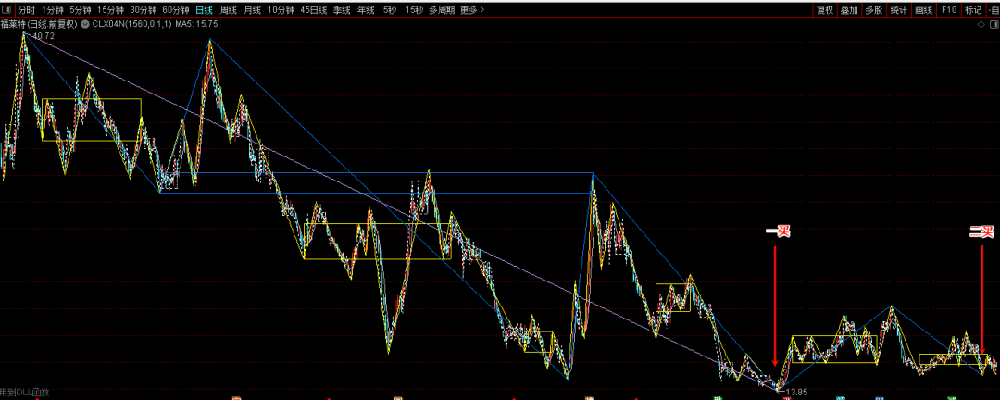
// 简化的检测骨架
if (一买后上涨 && 出现回调) {
一买低点 = 获取一买位置();
if (回调低点 > 一买低点) {
if (MACD 出现金叉) {
标记二买信号(101);
}
}
}
适用与回避的边界：适合一买确认后的适度回调——回调幅度不超过前一波上涨的 50%；回避无趋势的震荡市与回调过深的情形（可能已是趋势反转，二买条件不再成立）。
类二买与选强¶
类二买指与二买结构同型、位置略深的提醒点，常与三买形态重合（「二三买合一」）。CLXS0005 对两者做了显式建模：
- c 点：二买提醒点（第一次预警）；
- e 点：类二买提醒点（第二次预警）；
- b、d 两个回调低点的门槛由参数 MODELOPT 控制：
00005只要求高于中枢下沿 ZD（图 06-4），10005要求高于中枢上沿 ZG（图 06-5）——后者是在选强，只留最强的二买，不强的不关注。
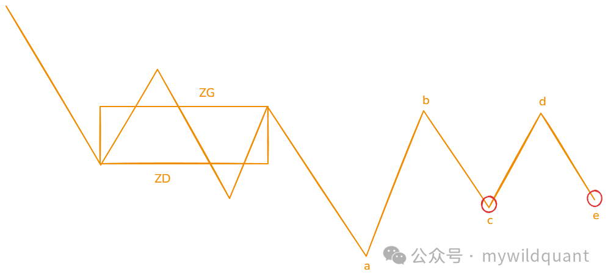
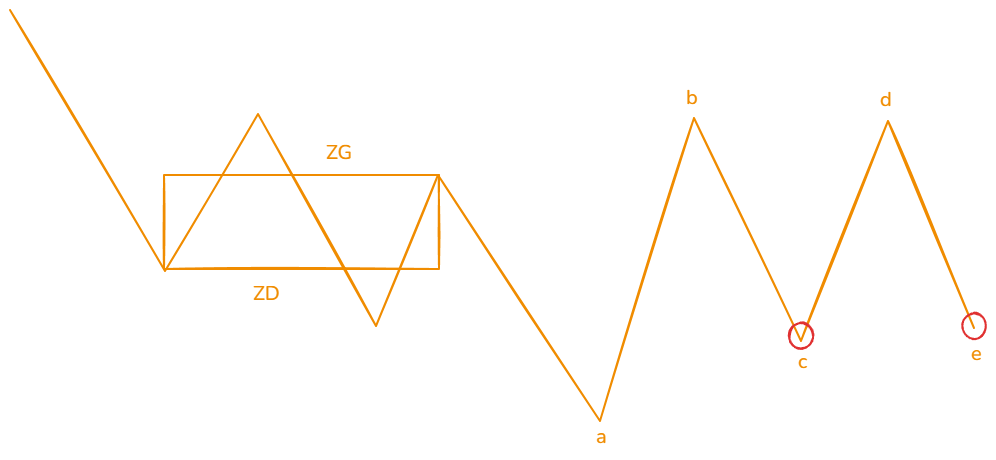
信号值本身携带位置信息，可在公式里直接过滤：
SIG > 0：c、e 两个点都要；100 < SIG < 200：只要 c 点（二买）；SIG > 200：只要 e 点（类二买）。
三买¶
双重验证的工程定义（CLXS0014）¶
经典三买是趋势中第一个中枢的突破，fqchan04《中枢》已给出顺势严格、逆势维持的口径表，此处不重复。CLXS0014 把三买翻译成可执行的双重验证——三买 = 背驰 + 突破：
S0008 背驰信号 → 定位信号所在趋势 → 用线段信号定位趋势内全部线段中枢
→ 取最后一个线段中枢 → 验证收盘价位置 → S0014 信号
- 背驰验证（笔中枢层面）：S0008 对比进入笔与离开笔的 MACD 特征，确认动能转折——买入背驰为「离开时金叉，且 DIFF 值或绿柱面积优于进入时」；
- 突破验证（线段中枢层面）：买入信号要求
close > last_pivot.zg（收盘价突破中枢上沿）才保留，否则取消；卖出信号要求close < last_pivot.zd才保留。
由此得到三买的三重确认：结构（趋势内存在完整中枢）、背驰（离开中枢时 MACD 背驰）、位置（收盘价突破中枢上沿）。这也给出一买与三买的工程区分：一买是「背驰 + 新低」，三买是「背驰 + 突破 ZG」——三买安全性更高，因为趋势已经发生转折。
突破验证选线段中枢而非笔中枢，是层次分工：笔中枢背驰捕捉精细的动能转折，线段中枢边界检验趋势级别的位置。只用背驰会混入大量中枢内部的震荡信号，只用突破会混入假突破。
三买的善后规则同样明确：价格突破 ZG 后又跌回中枢内（中枢扩展），跌破 ZG 即离场；若在中枢上沿附近重新获得支撑且 MACD 未走坏，可视为洗盘后再介入。
三买形态的五种变体（CLXS0004）¶
CLXS0004 的定位是「三买形态」筛选而非严格三买——形态只是统称，用于快速缩小候选范围，最终锁定目标靠使用者的经验判断。五种变体分两组，判定的共同骨架是回踩的低点不进入中枢：
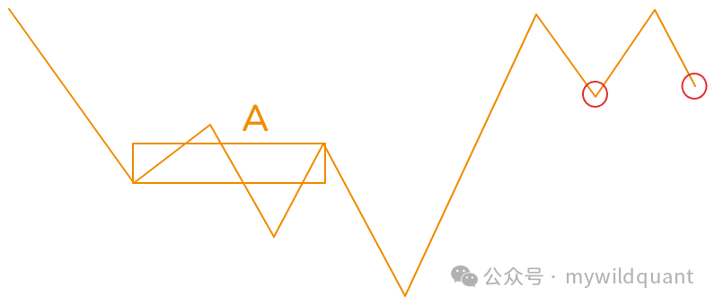
下跌反转组（A 为下跌过程中的最后一个笔中枢）：
- 基本形：信号点的最低价高于 A 中枢的 ZG（图 06-7）；
- 变种一、二：信号点的最低价大于 c 处的最高价（c 为回调中的高点），同一判据在两种回调结构上的形态。
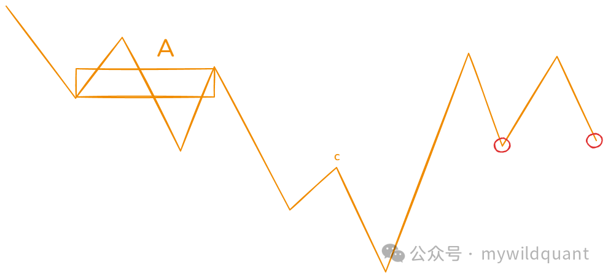
上涨顺势组（A 为上涨过程中的第一个笔中枢）：
- 基本形：信号点的最低价高于 A 中枢的 ZG（图 06-8）；
- 变种：c 为上涨中的第一个高点，后续回踩笔出信号时，最低价高于 c 的最高价。
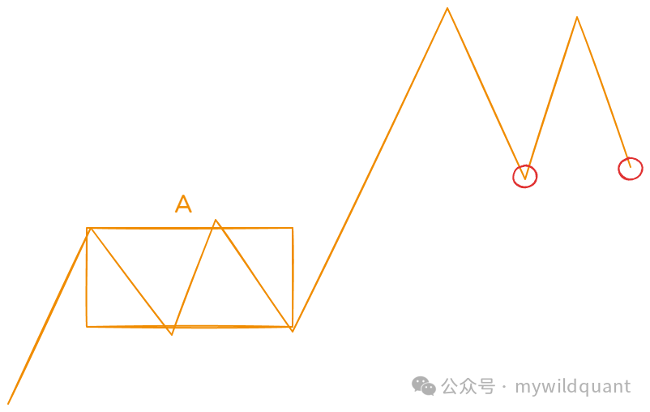
G 点三买提醒（CLXS0003）¶
CLXS0003 筛选中枢震荡类二买 / 三买标的，结构定义如下（A～I 标注）：
- A 点：前一个向下线段的结束点；
- AB：初始上涨；
- BCDE：下-上-下结构，且 D 低于 B、E 低于 C；
- EF：上涨突破 D 的高点；
- FG：下跌不破 E 点；
- HI：下跌不破 E 点。
满足该结构的标的，要么是中枢震荡，要么是三买。2024-12-29 的升级新增了 G 点提醒：FG 的回落点（G 点）本身也常出现很好的三买形态，因此在 G 点同样输出买点提醒——升级前只在后续标记位置提醒，升级后 G 点与图中 1、2 标记处都会提醒。
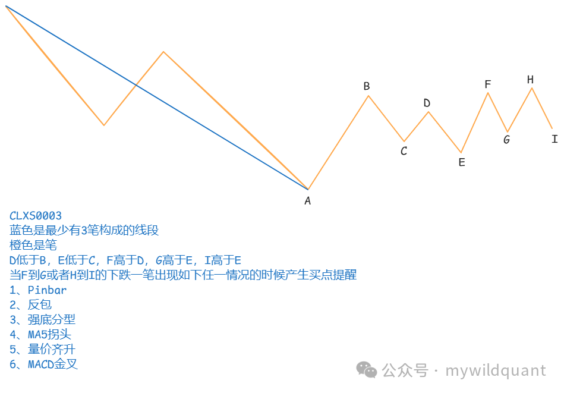
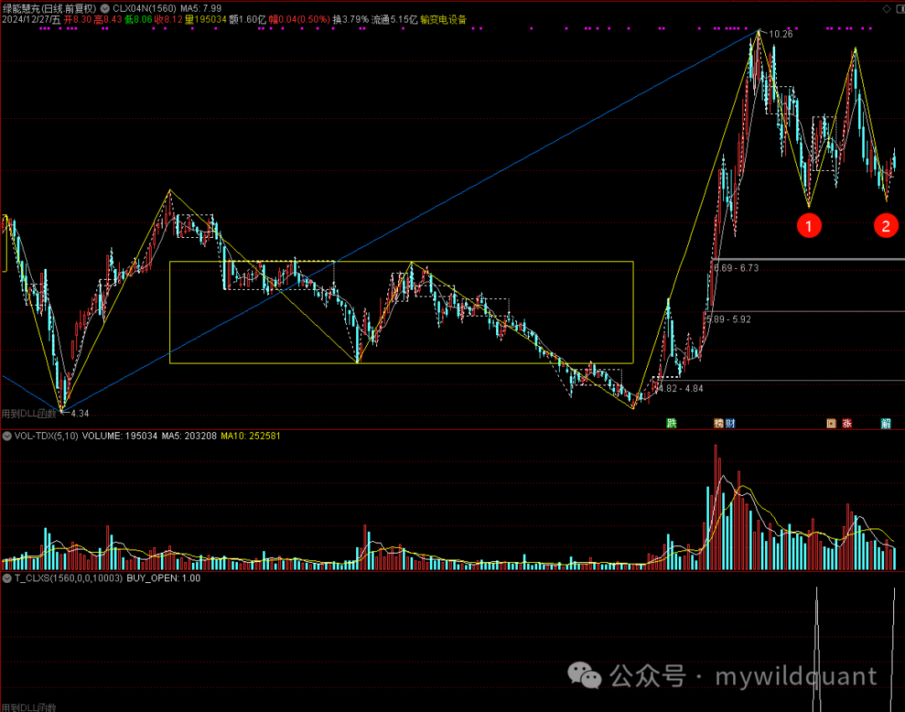
G 点提醒的工程意义：三买的最优入场在回踩确认的最早时刻，等回踩完全结束再提醒，位置已经抬高。把提醒点前移到 G 点，是用「可能被证伪的更早提醒」换「更好的入场价格」。
三买组合公式：严格与宽松¶
在 CLXS0014 发布之前，三买可以用 fqchan04 + fqcopilot 组合公式先拼出来。关键在 fqchan04 的 15 号函数取段中枢 ZG 序列，与 STRICT 参数：
BI:=TDXDLL4(2,H,L,0);
DUAN:=TDXDLL4(3,BI,H,L);
DUANZG:=TDXDLL4(15,DUAN,H,L); {段中枢的 ZG 序列}
DUAN1:=BARSLAST(DUAN=-1 OR DUAN=-0.5); {距当前下跌段终点}
ZG:=REF(DUANZG,BARSLAST(DUANZG>0)); {最近一个段中枢上沿}
BUY_OPEN AND IF(STRICT, REF(L,DUAN1)>ZG, C>ZG);
- 严格（STRICT=1）：
REF(L,DUAN1) > ZG——当前下跌笔段的低点都不进入中枢，是教科书式的「回抽不回中枢」； - 宽松（STRICT=0）：
C > ZG——只要求当前收盘价在中枢上方。
严格口径信号少而准，宽松口径信号多而杂。这与fqchan04《中枢》「顺势严格、逆势维持」的口径设计是同一思想：约束强度与使用场景匹配。
顶底互换（CLXS0007）¶
顶底互换是经典技术分析概念：前高被有效突破后由压力转为支撑（前低镜像为压力）。CLXS0007 把它嫁接到缠论笔结构上：
- 以笔的顶点作为高点参数：a 是任意一笔的高点；
- 其后出现 b 点或 c 点，它们都高于 a（价格由 a 点得到支撑）；
- b / c 进入距 a 点 2 倍 ATR(20) 的范围，且出现反转信号，输出买入提醒；
- b、c 两处都会提醒。
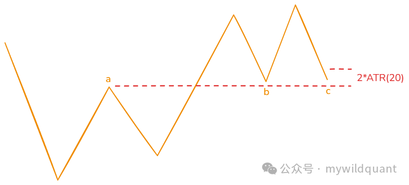
三个构件各司其职：笔顶点定义支撑位，ATR 距离定义「接近支撑」（用波动率归一，固定百分比对不同波动特性的品种会失真），反转信号确认「支撑生效」。它不属于严格的三类买卖点，是买卖点体系中「支撑确认入场」的补充形态。
模型化实现：判定条件对照表¶
| 模型 | 定位 | 判定条件 | 信号 |
|---|---|---|---|
| CLXS0003 | 中枢震荡类二买 / 三买 | AB 初始上涨；BCDE 下上下（D 低于 B、E 低于 C）；EF 破 D 高点；FG、HI 不破 E | 买点提醒（G 点及后续标记处） |
| CLXS0004 | 三买形态（5 变体） | 信号笔最低价高于中枢 ZG 或 c 处最高价；下跌取最后笔中枢，上涨取第一笔中枢 | 六种信号位置出买点 |
| CLXS0005 | 二买 / 类二买 | b、d 低点高于 ZD（00005）或 ZG（10005）；c 二买、e 类二买 | SIG > 0 全要；100～200 只要 c；> 200 只要 e |
| CLXS0007 | 顶底互换 | 笔高点 a 支撑；b / c 高于 a 且进入 2×ATR(20) 出反转信号 | b、c 买入提醒 |
| CLXS0008 | 一买一卖（背驰） | 金叉 / 死叉时刻，DIFF 或 MACD 累积值对比；单中枢要求完备 | ±101 / ±201 / ±301 |
| CLXS0013 | 二买 | 一买确认后回调不创新低 + MACD 金叉 | 101 |
| CLXS0014 | 三买三卖 | S0008 背驰（笔中枢）+ 收盘价突破最后线段中枢 ZG / ZD | 继承 S0008 编码 |
各模型的产品级参数（MODELOPT、STRICT、ATR 倍数等）与全平台调用代码见 fqcopilot 章节的对应模型页，本章只负责判定原理。另注意覆盖边界：CLXS0014 覆盖的是标准形态——趋势中明确形成线段中枢后有效突破、且伴随笔中枢背驰；三买在实盘中还有其他形态变种，留给后续模型补全。
常见误区¶
误区一：把「三买形态」当严格三买。 CLXS0004 的作者自述「这并不是严格意义上的三买」。形态模型的功能是快速筛选中意的形态，最终锁定目标靠自己的经验判断。把它当精确信号使用，是对工具边界的误解。
误区二：单完备中枢盘整背驰直接做交易信号。 背了又背是常态。至少等「完备 + 非完备」的两中枢结构，或直接用 CLXS0014 叠加位置验证过滤。
误区三：忽视涨停失真。 涨停状态失去波动性，MACD 失真，背驰判断随之失真——有过「卖飞龙头」的实盘教训。连续涨停标的的背驰信号一律存疑。
误区四：信号失败后不再跟踪。 第一次背驰信号失败，同一结构后续可能再次产生有效信号。把失败信号之后的走势拉黑，会漏掉第二次机会。
误区五：背驰与突破的级别混用。 S0008 的动能对比发生在笔中枢，S0014 的突破验证发生在线段中枢。动能看小级别、位置看大级别是双层设计的分工，跨级别混搭（如笔中枢背驰 + 笔中枢突破）会同时丢掉两层的过滤价值。
误区六：把类二买与二买混为一谈。 c 点与 e 点是两个不同的预警位置（信号值区间可分），强度门槛也不同（ZD 与 ZG）。混淆后，回测统计与实盘过滤都会失真。
用法¶
公式端（股软）¶
三个层次，从组装到成品。
一买（8 号模型独立使用）——一个线段内的背驰买点公式：
RESET:=TDXDLL7(1,0,0,0);
IG1:=TDXDLL7(2, 6, WAVEOPT, 0); {WAVEOPT=1560，笔参数}
IG2:=TDXDLL7(2, 7, 0, 0);
IG3:=TDXDLL7(2, 8, 0, 0);
IG4:=TDXDLL7(2, 9, 8, 0); {8 号模型}
IG5:=TDXDLL7(2, 3, OPEN, 0);
IG6:=TDXDLL7(2, 5, VOL, 0);
SIG:=TDXDLL7(3,HIGH,LOW,CLOSE);
BUY_OPEN:SIG>=PIVOTNUM*100+1; {PIVOTNUM 为线段中笔中枢的个数}
二买（8 号模型 + fqchan04 组合）——「所有买点都是一买」的直接应用：线段内出现背驰一买，且该段低点不破前面下跌走势的低点，即二买：
BI:=TDXDLL4(2,H,L,0);
DUAN:=TDXDLL4(3,BI,H,L);
TREND:=TDXDLL4(4,DUAN,H,L);
DUAN1:=BARSLAST(DUAN=-1 OR DUAN=-0.5); {距信号所在下跌段终点}
DUAN2:=DUAN1+REF(DUAN1,DUAN1+1)+1; {再往前一个下跌段终点}
TREND1:=BARSLAST(TREND=-1); {下跌走势终点}
BUY_OPEN AND TREND1>0 AND DUAN2=TREND1;
DUAN2 = TREND1 用于对齐两个低点的时间位置：前一个下跌段的终点恰好就是下跌走势的终点，信号所在的下跌段在其之后完成——本段低点高于走势低点，正是「一买不破下跌走势低点」的二买定义。
三买——见上文 STRICT 严格 / 宽松组合公式；发布 CLXS0013（二买）、CLXS0014（三买三卖）后，两类买点可直接调用成品模型，无需手工组装。
Python 端与系统集成¶
- CLXS0008 在大级别上作选股模型，在小级别上作交易信号模型；已作为交易信号集成进番茄量化系统——这是第一个用 C++ 编写的 fqcopilot 信号充当系统交易信号的案例，之前的信号都由 Python 生成。
- 信号值的编码解读沿用fqchan04《中枢》的说明（如
8207= 8 号模型、2 个中枢的下跌背驰、MACD 金叉确认买入）。 - 搭配建议：S0014 作主信号（数量少、准确率高），S0008 作预警信号（数量多、先提示），先预警、后确认。
知识来源¶
- 《CLXS0003选股模型，就用编号，不知道应该叫什么名字》（2024-11-30）
- 《发布fqcopilot-2024.12.29，升级CLXS0003选股程序》（2024-12-29）
- 《发布fqcopilot-2025.01.04，增加CLXS0004选股，这是三买形态的筛选》（2025-01-04）
- 《发布fqcopilot-2025.01.11，增加CLXS0005选股，二买及类二买形态的筛选》（2025-01-11）
- 《发布fqcopilot-2025.01.27，CLXS0007模型，顶底互换》（2025-01-27）
- 《发布fqcopilot-2025.01.28，CLXS0008模型，盘整或趋势背驰选股》（2025-01-30）
- 《缠论CLXS0008模型更新》（2025-07-22）
- 《CLXS0008作为一种交易信号集成到系统中》（2025-07-27）
- 《CLXS0008忽视了涨停导致的MACD失真的情况》（2025-08-21）
- 《今天的更新，CLXS0008和CLXS0009的优化》（2025-09-28）
- 《Fqcopilot更新日志，CLXS0008背驰模型的除虫》（2025-11-29）
- 《怎么基于FqCopilot和FqChan04写一个二买的公式呢》（2026-03-23）
- 《怎么基于FqCopilot和FqChan04写三买公式》（2026-03-24）
- 《FqCopilot增加新模型0013，缠论二买，如何在回调中找到黄金买点》（2026-03-25）
- 《在FqCopilot中实现了缠论二买》（2026-03-25）
- 《FqCopilot 0014信号模型来了，即缠论三买三卖》（2026-03-26）
- 《今天发布了一个新的模型S0014，也就是缠论的三类买卖点》（2026-03-26）